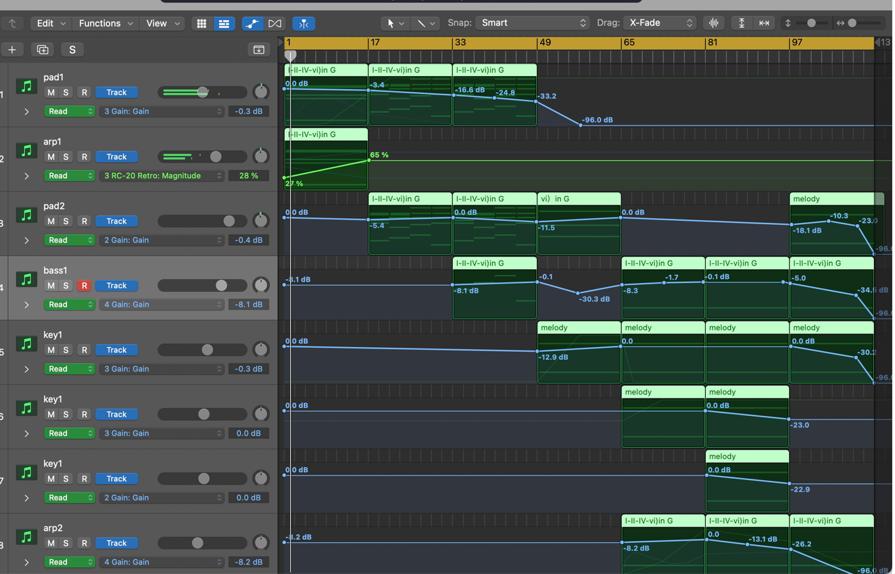

Original music,
in many forms.
I write, arrange and mix every track myself and release them as Antirender.
36Original tracks
7Self-released albums
2019–Writing & producing
Start here. Ten tracks across five years.
The most-played tracks from each release, newest first.
Cover art by TaTa (tataqwq233) ↗
Seven albums, live on every major platform.
On Spotify, Apple Music, YouTube Music, TIDAL, NetEase Cloud Music and more.
 Anti Render
Anti Render
Written from scratch, finished end to end.
- ComposeHarmony and melody first; the hook has to work on one instrument.
- ArrangeLayered instruments, sections and transitions in Logic Pro.
- MixBalance, space and dynamics; basic mastering for streaming loudness.
- ReleaseSelf-published to Spotify and other platforms as Antirender.
The same ear, in interaction work.
-
p5.js · Sound
Sound & Visualisation — 25 sound-reactive sketches
A collected sound library drives generative visuals, ending in the interactive Rainbow Bloom header.
2025→ -
Makey Makey · WebGL
Drum Machine — touch-to-digital instrument
Conductive touch pads trigger a WebGL drum machine built in p5.js.
2025↗
Need a cue, a theme, or a sound for a project?
I write original music for student films, interaction demos and games — send a brief and a reference.